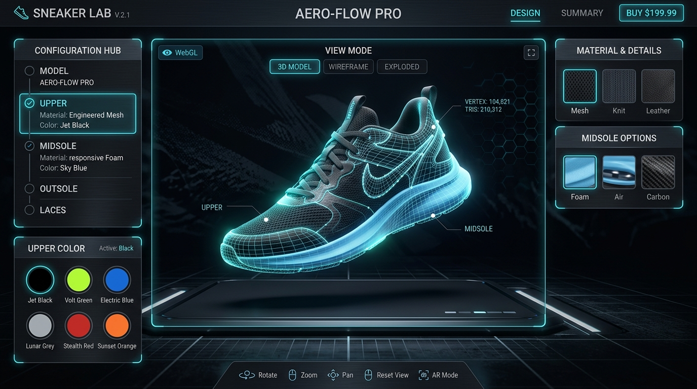

In the competitive landscape of digital commerce, static image galleries are no longer sufficient to capture consumer attention and drive conversions. Modern consumers expect interactive, immersive experiences that bridge the gap between physical retail and online shopping. This demand has ushered in the era of 3D e-commerce.
By implementing a Three.js e-commerce 3D product customizer, brands can allow customers to rotate, zoom, recolor, and swap components of a product in real-time. For products with high variability—such as customized athletic sneakers, modular office furniture, or tailored watches—interactive 3D configurators have been shown to increase conversion rates by up to 40% and reduce product return rates by over 30%.
However, building a production-grade 3D customizer presents significant engineering challenges. Developers must balance photorealistic rendering quality with fast web performance, mobile responsiveness, and seamless integration with existing shopping cart systems.
This guide details the technical blueprint for developing a high-performance, interactive 3D product customizer using WebGL, Three.js, Draco compression, and modern state-management systems.

1. The Core 3D Architecture: Scene, Camera, and Renderer
At the heart of any web-based 3D configurator is WebGL. While writing raw WebGL is verbose and complex, Three.js provides a powerful, developer-friendly abstraction layer. A standard 3D viewer requires three fundamental components:
- The Scene (
THREE.Scene): The container that holds all 3D meshes, lights, and cameras. - The Camera (
THREE.PerspectiveCamera): The viewpoint through which the user observes the scene. For product viewers, a perspective camera simulates human eye depth and parallax. - The Renderer (
THREE.WebGLRenderer): The engine that draws the 3D scene onto an HTML5element.
Optimizing the Renderer for E-Commerce
For e-commerce, rendering quality is paramount. To achieve photorealistic textures and lighting, you must configure the renderer with modern color management and anti-aliasing:
const renderer = new THREE.WebGLRenderer({
canvas: document.getElementById('configurator-canvas'),
antialias: true, // Smooths jagged edges on meshes
alpha: true, // Allows transparent backgrounds for seamless UI integration
powerPreference: "high-performance" // Tells the browser to prioritize the GPU
});
// Configure standard color space and tone mapping
renderer.outputColorSpace = THREE.SRGBColorSpace;
renderer.toneMapping = THREE.ACESFilmicToneMapping;
renderer.toneMappingExposure = 1.0;
renderer.setPixelRatio(Math.min(window.devicePixelRatio, 2)); // Limit to 2x for mobile performance
renderer.setSize(container.clientWidth, container.clientHeight);2. Model Pipeline: glTF and Draco Compression
When building an interactive 3D product customizer WebGL pipeline, asset optimization is critical. E-commerce sites must load in under 2 seconds. Serving raw 50MB CAD files will cause users to bounce before the configurator even renders.
Why glTF/GLB is the Industry Standard
The Khronos Group’s glTF (GL Transmission Format) is the "JPEG of 3D." It is optimized for efficient transmission and fast loading on the web. A .glb file is the binary representation of glTF, bundling textures, geometries, and scene hierarchy into a single file.
Implementing Draco Loader Compression
Draco is an open-source library developed by Google for compressing and decompressing 3D geometric meshes. By compressing vertex positions, normals, texture coordinates, and connectivity information, Draco reduces GLB file sizes by up to 90%.
Here is a performance comparison of loading an identical sneaker model (like the one shown in our hero graphic) with and without optimization:
| Format / Optimization | File Size | Load Time (Fast 3G) | Time to Interactive (TTI) | GPU Memory Footprint |
|---|---|---|---|---|
| Raw OBJ + MTL Textures | 42.5 MB | 28.6 seconds | 32.4 seconds | 180 MB |
| Uncompressed GLB | 12.8 MB | 8.5 seconds | 9.8 seconds | 90 MB |
| Draco-Compressed GLB | 1.4 MB | 0.9 seconds | 1.2 seconds | 45 MB |
To decode Draco-compressed meshes in the browser, you must instantiate a DRACOLoader and link it to your GLTFLoader:
import { GLTFLoader } from 'three/examples/jsm/loaders/GLTFLoader.js';
import { DRACOLoader } from 'three/examples/jsm/loaders/DRACOLoader.js';
// Setup GLTF loader
const loader = new GLTFLoader();
// Configure Draco decoder path (static files served from your public directory)
const dracoLoader = new DRACOLoader();
dracoLoader.setDecoderPath('/js/libs/draco/');
loader.setDRACOLoader(dracoLoader);
// Load the model
loader.load(
'/assets/models/sneaker_optimized.glb',
(gltf) => {
const model = gltf.scene;
scene.add(model);
setupMaterialPointers(model);
},
(xhr) => {
const percent = (xhr.loaded / xhr.total) * 100;
console.log(`Loading: ${percent.toFixed(0)}%`);
},
(error) => {
console.error('An error occurred loading the 3D model:', error);
}
);3. Dynamic Material Swapping and Mesh Picking
For a configurator to be interactive, users must be able to click on different sections of the model (e.g., the laces, sole, or upper mesh of a shoe) and apply distinct materials or colors. This requires two techniques: Raycasting and Named Geometry Hierarchies.
1. Organizing Your 3D Assets
In your 3D modeling software (Blender, Maya, or 3ds Max), you must name your meshes logically. For example, a sneaker model should have distinct child objects named mesh_sole, mesh_laces, mesh_upper, and mesh_tongue. This makes it simple to target specific components programmatically in JavaScript.
2. Raycasting for Mesh Selection
Three.js uses THREE.Raycaster to project a 3D ray from the screen's 2D mouse position into the 3D scene, detecting which meshes the cursor passes through.
const raycaster = new THREE.Raycaster();
const mouse = new THREE.Vector2();
function onCanvasClick(event) {
// Normalize pointer position to -1 to +1 range
const rect = renderer.domElement.getBoundingClientRect();
mouse.x = ((event.clientX - rect.left) / rect.width) * 2 - 1;
mouse.y = -((event.clientY - rect.top) / rect.height) * 2 + 1;
raycaster.setFromCamera(mouse, camera);
const intersects = raycaster.intersectObjects(scene.children, true);
if (intersects.length > 0) {
const clickedMesh = intersects[0].object;
console.log('User clicked on part:', clickedMesh.name);
// Highlight the selected component in the UI
setActiveConfigPart(clickedMesh.name);
}
}
window.addEventListener('click', onCanvasClick);3. Dynamic Material Swapping
Once a part is targeted, you can swap its textures or colors on the fly using THREE.MeshStandardMaterial properties. Physical accuracy is achieved using Roughness/Metalness maps:
function updatePartColor(partName, hexColor) {
const targetMesh = scene.getObjectByName(partName);
if (targetMesh && targetMesh.material) {
// If the material is shared, clone it first to avoid changing other parts
if (!targetMesh.material.isCloned) {
targetMesh.material = targetMesh.material.clone();
targetMesh.material.isCloned = true;
}
// Smoothly transition color
gsap.to(targetMesh.material.color, {
r: new THREE.Color(hexColor).r,
g: new THREE.Color(hexColor).g,
b: new THREE.Color(hexColor).b,
duration: 0.4
});
// Ensure the material updates its rendering pipeline
targetMesh.material.needsUpdate = true;
}
}4. Architectural Best Practices: Decoupling UI from the Render Loop
A common architectural trap is nesting 3D rendering logic directly inside UI view files (e.g., React components or Vue pages). This binds your rendering thread to framework re-render cycles, introducing noticeable frame drops (stuttering) during model rotations.
The Solution: A Vanilla JS Core with a State Bridge
Design your 3D customizer as a standalone vanilla JavaScript class (e.g., class ProductViewer). The class exposes a simple API (init(), updatePart(), rotateCamera(), destroy()) and triggers custom events when the loading state or interactive selections change.
Your front-end framework (React, Next.js, or Vue) wraps this class. When a user clicks a button in the HTML interface, the UI calls the class API:
// React/Next.js UI Hook Example
import { useEffect, useRef } from 'react';
import { ProductViewer } from '../3d/ProductViewer';
export function ConfiguratorPanel() {
const canvasRef = useRef(null);
const viewerRef = useRef(null);
useEffect(() => {
if (canvasRef.current) {
viewerRef.current = new ProductViewer(canvasRef.current);
viewerRef.current.loadModel('/assets/models/sneaker.glb');
}
return () => {
if (viewerRef.current) viewerRef.current.destroy();
};
}, []);
const handleColorChange = (part, hex) => {
if (viewerRef.current) {
viewerRef.current.updatePartColor(part, hex);
}
};
return (
<div class="configurator-container">
<canvas ref={canvasRef} id="configurator-canvas" />
<div class="ui-controls">
<button onClick={() => handleColorChange('mesh_sole', '#ff0000')}>Red Sole</button>
<button onClick={() => handleColorChange('mesh_sole', '#0000ff')}>Blue Sole</button>
</div>
</div>
);
}5. Three.js Product Customizer Development Cost and Options
Building a fully customized 3D configurator is an investment. It requires 3D model processing, asset loading systems, UI development, and checkout integrations. Businesses have three main paths to execute:
1. Off-the-Shelf Configurator SaaS
- Pros: Low entry cost, pre-built integrations, hosting included.
- Cons: High recurring monthly fees, restricted styling flexibility, limited branding control, dependency on third-party servers.
2. In-House Development
- Pros: Complete control over features and hosting.
- Cons: Finding developers who specialize in WebGL/Three.js math and e-commerce integrations is difficult. Development typically takes 3–6 months.
3. Hiring a Specialized Agency (e.g., TodayInTech)
- Pros: Expertise in Draco optimization, high-fidelity lighting models, fast delivery, no monthly fees, complete IP ownership.
- Cons: Higher initial capital expenditure than a basic SaaS subscription.
Cost and Delivery Comparison Table
| Development Path | Typical Initial Cost | Monthly Recurring Fees | Development Timeline | Performance Optimization | Custom Branding |
|---|---|---|---|---|---|
| Configurator SaaS | $500 - $2,500 | $150 - $900/month | 1 - 2 weeks | Medium (Server-dependent) | Restricted |
| In-House Team | $25,000 - $60,000 | Developer Salaries | 12 - 24 weeks | Variable (Skill-dependent) | Unlimited |
| TodayInTech Agency | $8,000 - $18,000 | $0 (Self-hosted) | 4 - 6 weeks | Excellent (Draco, PBR, WebGL) | Unlimited |
Frequently Asked Questions
Do 3D configurators work on mobile browsers and older smartphones?
Yes, modern smartphones have highly capable GPUs. By configuring your WebGLRenderer to limit device pixel ratios (Math.min(window.devicePixelRatio, 2)) and utilizing Draco-compressed GLB files under 2MB, your 3D configurator will load rapidly and run smoothly at a stable 60 FPS on iOS and Android devices.
How do we connect the customized 3D design to our e-commerce cart?
When a user customizes a product, your state bridge maintains a JSON object detailing the choices (e.g., { sole: "red", laces: "black", size: 10 }). Upon clicking "Add to Cart," this JSON object is passed as line-item properties to Shopify, WooCommerce, or your custom headless cart, ensuring the fulfillment team receives the precise specification.
Is custom 3D modeling included in the Three.js configurator cost?
Generally, yes. Specialized development teams will ingest your product CAD files (STEP, IGES) or high-res 2D photos, optimize the polygon structure, apply Photorealistic Physically Based Rendering (PBR) textures, and deliver the final web-ready GLB models as part of the overall scope.
Leverage Immersive 3D Customizers for Your Brand
Adding an interactive 3D configurator elevates your e-commerce experience from a simple catalog to an engaging shopping playground. At TodayInTech, we specialize in building fast, optimized, and visually stunning Three.js configurations integrated directly into your custom Shopify, BigCommerce, or headless storefronts.
Want to learn how we can bring your catalog to life in interactive 3D? We design and build functional prototypes for your products so you can verify the performance and aesthetics before committing any budget.
Ready to stand out? Book a Demo with the TodayInTech Engineering Team or explore our WebGL case studies at Impakto 3D Configurator Project.